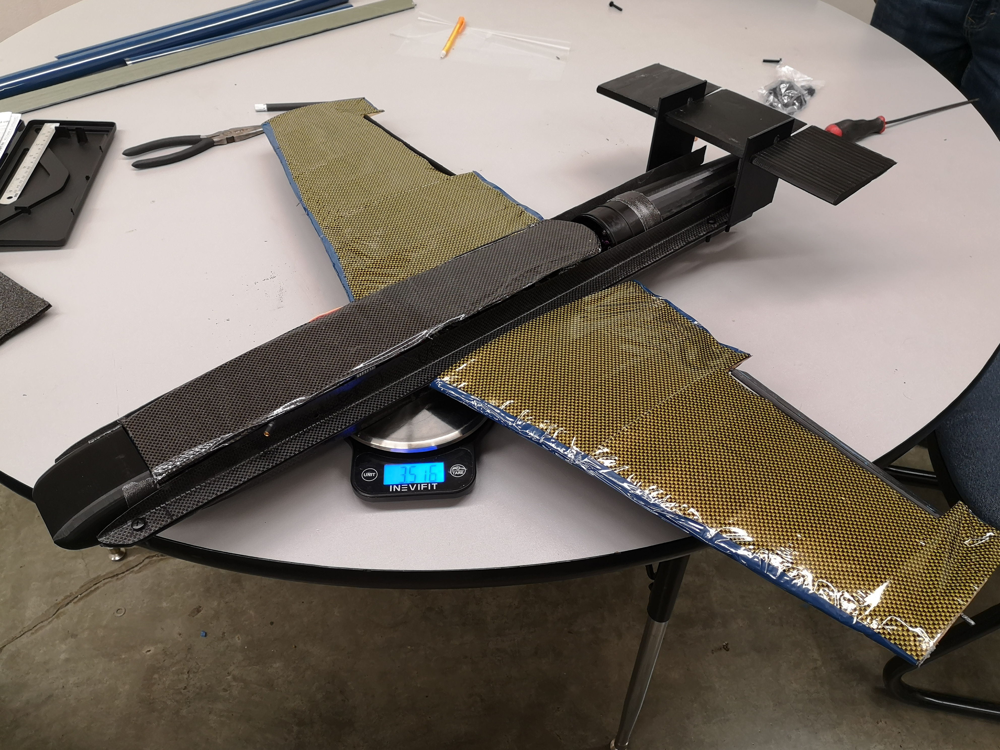
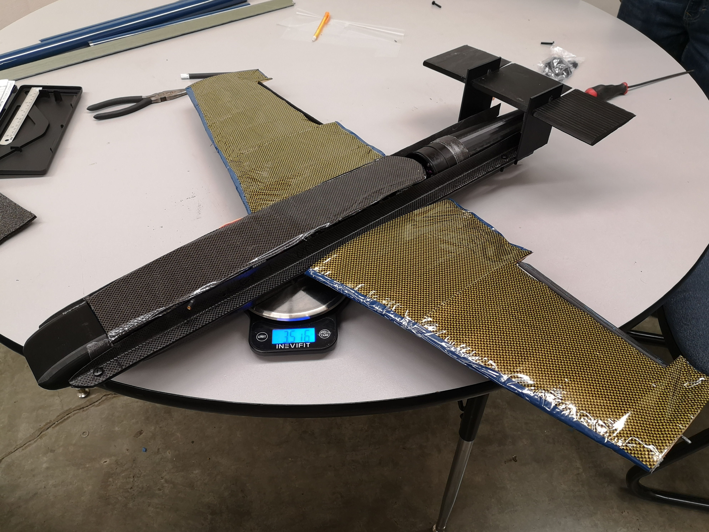

ALLEN'S PORTFOLIO

Delin Huang (Allen) | Guangzhou, Guangdong, China
- Minor: Industrial Engineering
- Certificate: Engineering Management
Hello visitors, I am Allen Delin Huang, welcome to my portfolio!
Little bit about myself. I am currently majoring in Mechanical Engineering at Oregon State University for my Master's program, my division is design. My purpose in purchasing a master's degree is to study and understand product design in a broad picture, from research and development to manufacturing, industrial management, and project planning. In this way, I can understand the lifespan of productions, and be able to optimize a product design with the best efficiency and methods.
In this portfolio, I will show you all my projects within 3 years (2019 - 2021). Some of them are from my Bachelor's program, and the rest are from the Master's program. They are from different classes, such as Modern Product Design, Lean Manufacturing, Design for Manufacturing, and else. After I received the design knowledge from different aspects, I find strong interest and motivation to consider product design, or function design in mechanical products as my career path direction.
"The major purposes of this project are to determine product materials and their manufacturing methods, then creatively design a product that has not been seen in the market based on the previous analysis. There are two parts in my reverse engineering project: disassemble a light bulb, and redesign a light bulb on 3D modeling software. Compared to product development and refurbishing projects, reverse engineering projects allow learning materials and manufacturing processes without accessing special tools or prototyping a product, which is suitable to me who can’t access a workshop or any raw materials. Disassembling a light bulb seems boring, but it is the cheapest and replaceable product that I can access at my place. Moreover, disassembling a light bulb does not require any specific tools, and the simple identified structure can shorten the disassembling period. The second part of the reverse engineering project is designing a new light bulb. I was inspired by the wireless charging technology and electromagnetic train and had a primary idea constructed in my mind before deciding on the project. On the other hand, learning from the customers’ pain points, certain light bulbs short LED life, a light bulb with an open diffuser and replaceable LEDs is a solution. Thus, combining all the design elements, an exciting and creative design is settled. The new light bulb design is more attractive and motivating to me compared to others, which is one of the reasons why it is chosen. The overarching decisions in this design are eco-friendly, lightweight, revolutionary, and aesthetic."
"In this project, we will analyze the problems meeting in aggregate planning and workforce planning and solve them by using linear programming. Aggregate planning (AP) is a strategic planning process of developing, scheduling, and maintaining overall production plans for an organization. In the last century, it covers a time horizon from three to 18 months. Nowadays, the planning horizon is typically 1 to 3 years. Workforce planning (WP) is the planning determining the availability of the workforce in order to support the production plan. The AP module can be utilized to either refine the output of the WP module or work together with WP module. Linear programming (LP) is a tool solving an optimization problem subject to linear equality and inequality constraints. We will use linear programming to find the optimal solution for variables such as amount produced, amount sold, the left-over inventory for each period, workforce in regular time and overtime, increase or decrease hire in workforce and so forth."
This project is to practice project engineering management knowledge and professional tools such as Microsoft Project. It was a group project that was completed by me and the other four classmates virtually. We assumed the project would be done in four weeks, and theoretically aranage a proper Gantt chart to track the project progress. Over the project, I learned that communication inside the team is important and it is the key to complete the project effectively. Besides, I am more familiar with Microsoft Project, Work Breakdown System, and understand how to manage risk and cost after this project.
"Machines are the symbols of advanced civilization and industry and evolve with industrial development and become complicated to handle multiple problems. This paper majorly discusses the lean manufacturing concept “Jidoka,” and its performances in Industry 4.0 will be mentioned. Jidoka was introduced as autonomation to prevent the occurrence of abnormalities and defective products, and it developed various methods in four generations. Autonomation is not automation, and the main difference is human intelligence. One of the achievements of Industry 4.0 is to construct a Cyber-Physical System in industries, however, adopting the latest generation of Jidoka, Jidoka 4.0, is difficult because limited research studies are not supporting its applications in the industries due to the limited studying. Confusions, unpopularity, and standardization are the barriers in the current industry for Jidoka 4.0. Therefore, it is necessary to establish a information-sharing criteria to clarify and standardize the development of industry so that Jidoka can be adapted easily. Researchers should study other aspects of Jidoka and extend its functions, and those will finally support Jidoka’s improvement in the industries."
"The birdhouse factory example will allow us to examine a high volume, low margin manufacturing setting where creating a product quickly and consistently is the only way to stay profitable. We will examine the process of designing and refining our birdhouse factory and the lean manufacturing principles that guide it through its four developmental stages: Proof of Concept, Prototyping, First Article Development, and Production."
"Many rural and outlying communities lack the transportation methods to transport people and things to and from their location. To address this need, our design goal is to develop amphibious passenger airplane concepts that can achieve and meet the needs of potential customers. To create a viable product concept, we identified potential customer groups - gathering customer requirements and defining related engineering characteristics. From these customer requirements, we generated concept variations related to cabin design, landing gear, and propulsion via brainstorm/mind-mapping and creating a morphological matrix. Plausible full product concept solutions were then created and compared amongst each other using Pugh’s Chart analysis and further analysis upon individual performance with a Decision matrix. The end result of the Decision matrix identified a concept variant, titled Hybrid 2, as the overall winning concept. The winning concept is a 20 passenger, mixed economy/business class seating, twin turboprop engine fixed-wing airplane with retractable tricycle landing gear and removable floats for amphibious operation."
"Our team established mission parameters that were to be priority number one throughout the process. Configuration requirements that we had were: a high thrust to weight ratio, low drag, design suited for EDF and RC planes built for speed. We designed and built an aircraft that will have high cruise speed and swift aerodynamic performance. The goal for this aircraft was to fly at 70mph at cruising altitude. Incorporating aspects such as low drag for maximum efficiency and high power to weight ratio was taken into account for the design. This aircraft would be hand thrown, thus no landing gear was designed or attached. This reduced costs for us and also reduced complications when designing the aircraft. Our aircraft was designed around its motor. We opted to use a 70mm EDF (electric ducted fan). Although this is not the most efficient motor for radio control aircrafts, it is a lot more compact and can be fit anywhere needed. This specific EDF produces around 5.5 pounds of thrust based on the spec sheet provided from the manufacturer. With this, the power to weight ratio of greater than 1:1 would be achievable. The thin, yet structurally sound design is capable of accomplishing the speed requirements that we set for ourselves. We wanted to make the aircraft as cost-efficient as possible and used materials that would be everlasting such as carbon fiber. The weight of the electronics in the fuselage are the majority of the items contributing to the weight. The wings, tail, and fuselage body do not weigh more than 2 lbs. This gave a huge advantage, allowing our center of mass to be easily changed to match our mission profile needs, and it allowed us to keep our power to weight ratio to be high giving us high thrust values."
 

PDF Please